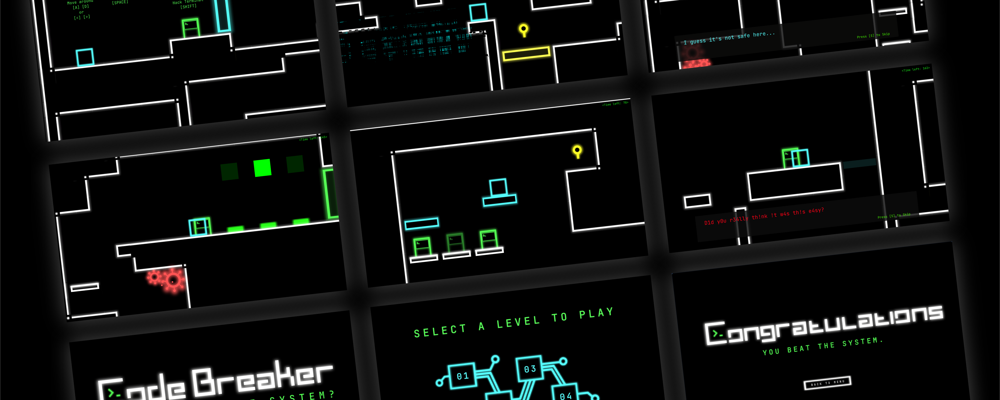

CodeBreaker: 2D Platformer
Hack je weg door de computer door puzzels op te lossen!
-
skills
game design, unity, c#, ux/ui design, visual
-
periode
maart/april 2023
-
opdrachtgever
Minor Applied Game Design
Opdracht
Maak een 2D Platformer met Unity Engine. Het spel bevat 3-5 levels met een opbouw in moeilijkheid. Het concept en verhaal van het spel bedenk je zelf en werk je uit. De gameplay en core mechanics moeten passen bij dit concept.
Conceptualisatie
Aan de hand van een brainstrom had ik een grote verzameling aan ideëen. Drie hiervan heb ik visueel onderzocht en verder uitgewerkt, waardoor ik gemakkelijker een keuze kon maken voor mijn concept.
Visueel Onderzoek
Aan de hand van het technologische concept heb ik visueel beeldmateriaal verzamelt. Dit referentiemateriaal heb ik samengevoegd tot een collage die de look & feel van mijn spel moet overbrengen.


Level Design
De speler moet puzzels oplossen om verder te komen in de levels. De levels zijn erg bewust ontworpen, dit omdat de puzzels en andere puzzel elementen verwerkt moeten worden, maar ook omdat de levels voor de speler als een doolhof aan moeten voelen.
De visuele elementen voor CodeBreaker heb ik geheel zelf ontworpen. Neon elementen versterken de cyber- en technologische look and feel van mijn concept. De speler is een simpel vierkantje, maar krijgt meer leven wanneer hij hackt of wordt uitgeschakeld.
Visual Asset Creatie
De visuele sprites hebben felle neon kleuren met een retro CGA kleurenpalet. De omgeving in de levels is wit, belangrijke elementen worden met kleuren weergegeven in de ruimte. Een paarse sleutel hoort bijvoorbeeld bij een paarse deur.
Gameplay Screenshots
Schermopnames van CodeBreaker. Ik raad je aan om het ook zelf te spelen!
 Speel CodeBreaker online!
Speel CodeBreaker online!

Next Up
Scraps Webdesign Concept
Een inspiratiewebsite voor jonge creatievelingen.